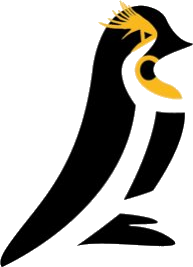

Corso di specializzazione per le attività di sostegno
Laboratorio TIC per includere
prof. Stefano Testa · Tutti i materiali del laboratorio, organizzati per argomento. Ogni modulo si legge come pagina o si proietta con il pulsante Presenta.